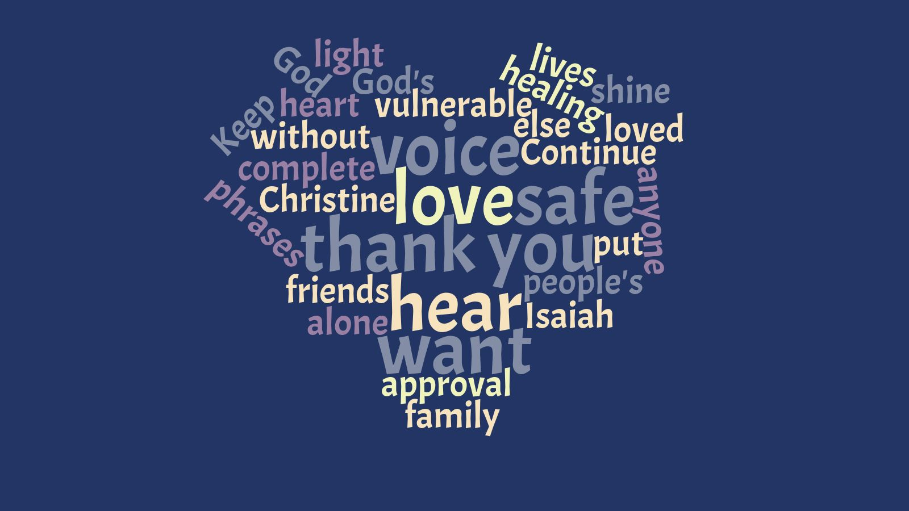

Words and phrases that God's put on my heart today:
"I am whole, without the approval of anyone else."
"You alone complete me God."
"Thank you that my family is safe."
"Thank you for healing Christine."
"Keep all my friends safe."
"I want to hear your voice."
"I love you."
"Isaiah, thank you for being so vulnerable."
"Continue to shine my light in people's lives."
"You are so loved."
"Why do you want to hear my voice?"
"I love you."
words & phrases (i)
